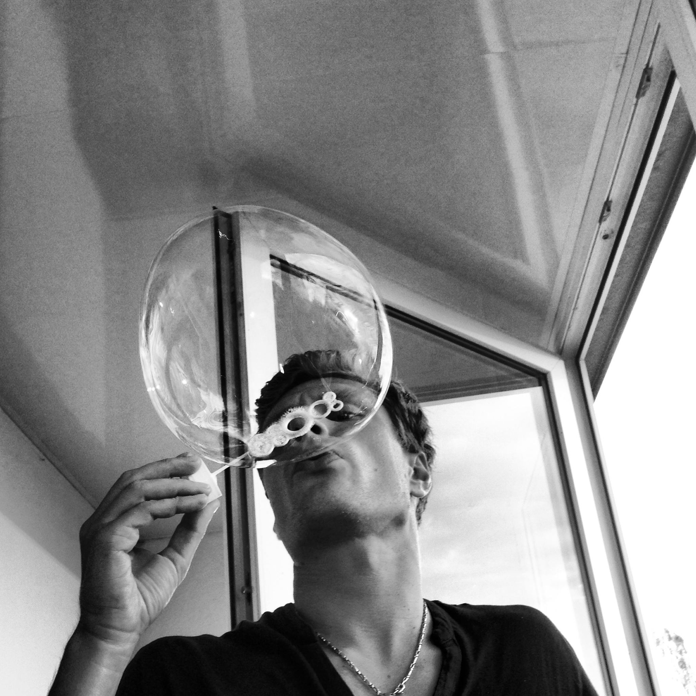

Naujos ir nauodotos snieglentės | - Slides.lt
2020.10.29 10:45
kontaktai svetainės struktūra Krepšelis 0 Prekė Prekės (tuščia)
Prekių nėra
Nemokamas pristatymas ! Pristatymas 0,00€ VisoPirkti
Prekė sėkmingai pridėta į krepšelį
Kiekis VisoKrepšelyje yra 0 prekė (-ės). Krepšelyje yra 1 prekė.
Prekės viso .= Viso pristatymas .= Nemokamas pristatymas ! Viso .= Tęsti apsipirkimą Pereiti prie apmokėjimo Prisijungti Jūsų paskyra Meniu Kalnų slidinėjimas Slidžių inventorius Kalnų slidės Slidžių batai Slidžių lazdos Aksesuarai Šalmai Slidinėjimo apsaugos Slidinėjimo akiniai Saulės akiniai Slidžių dėklai Slidžių vaškas Slidinėjimo apranga Slidinėjimo pirštinės Pošalmiai Termo rūbai Slidinėjimo kojinės Multifunkcinės skaros Snieglenčių sportas Snieglenčių inventorius Snieglentės Snieglenčių batai Snieglenčių apkaustai Snieglenčių aksesuarai Slidinėjimo šalmai Apsaugos Slidinėjimo akiniai Akiniai nuo saulės Snieglenčių dėklai Snieglenčių priedai Snieglenčių apranga Pirštinės Pošalmiai Termo rūbai Slidinėjimo kojinės Multifunkcinės skaros Riedėjimas Riedučiai Riedučiai suaugusiems Riedučiai vaikams Riedučių dalys Longboardai, Riedlentės, Mini boardai. Longboardai Riedlentės Penny board Riedlenčių dalys Paspirtukai Sudedami paspirtukai Triukiniai paspirtukai Paspirtukų dalys Elektrinis paspirtukas Aksesuarai Riedučių apsaugos Šalmai Ratukai, guoliai ir kiti priedai Aksesuarai Pačiūžos Aksesuarai Slidinėjimo aksesuarai Slidinejimo akiniai Saulės akiniai Slidinėjimo šalmai Pošalmiai ir multifunkcinės skarelės Slidinėjimo apsaugos Pirštinės Slidinėjimo įrangos dėklai Priežiūros priemonės Termo rūbai Laisvalaikis Kaitai Šokdynės, skersiniai ir kitos fitneso prekės Lauko sportas Pačiūžos Nuoma Servisas Kontaktai Snieglenčių sportas > Snieglenčių inventorius > SnieglentėsSnieglentės
Kalnų slidinėjimas Slidžių inventorius Kalnų slidės Slidžių batai Slidžių lazdos Aksesuarai Šalmai Slidinėjimo apsaugos Slidinėjimo akiniai Saulės akiniai Slidžių dėklai Slidžių vaškas Slidinėjimo apranga Slidinėjimo pirštinės Pošalmiai Termo rūbai Slidinėjimo kojinės Multifunkcinės skaros Snieglenčių sportas Snieglenčių inventorius Snieglentės Snieglenčių batai Snieglenčių apkaustai Snieglenčių aksesuarai Slidinėjimo šalmai Apsaugos Slidinėjimo akiniai Akiniai nuo saulės Snieglenčių dėklai Snieglenčių priedai Snieglenčių apranga Pirštinės Pošalmiai Termo rūbai Slidinėjimo kojinės Multifunkcinės skaros Riedėjimas Riedučiai Riedučiai suaugusiems Riedučiai vaikams Riedučių dalys Longboardai, Riedlentės, Mini boardai. Longboardai Riedlentės Penny board Riedlenčių dalys Paspirtukai Sudedami paspirtukai Triukiniai paspirtukai Paspirtukų dalys Elektrinis paspirtukas Aksesuarai Riedučių apsaugos Šalmai Ratukai, guoliai ir kiti priedai Aksesuarai Pačiūžos Aksesuarai Slidinėjimo aksesuarai Slidinejimo akiniai Saulės akiniai Slidinėjimo šalmai Pošalmiai ir multifunkcinės skarelės Slidinėjimo apsaugos Pirštinės Slidinėjimo įrangos dėklai Priežiūros priemonės Termo rūbai Akcija Laisvalaikis Kaitai Šokdynės, skersiniai ir kitos fitneso prekės Lauko sportas PačiūžosPrekių filtras
Clear filters Peržiūrėti produktus 34Specialūs pasiūlymai
Body Glove kruizeris Palm Black
"Blody Glove" gamintojo kruizeris...
95,00€ 99,00€ Visi pasiūlymaiMūsų parduotuvės
Raskite mūsų parduotuves Snieglentės
Snieglentės pagrinde būna dviejų tipų - "freeride" arba "freestyle" snieglentės, tad rinktis snieglentę turėtumėte pagal tai, ką planuojate su ja veikti: ar daryti triukus "box'uose" ar vystyti didesnius greičius. Taip pat rinkdamiesi snieglentę turi atkreipti dėmėsį į jos ilgį ir nepamiršti snieglentės kietumo.
Snieglentės Yra 34 prekės(-ių).
Rodyti: Tinklelis Sąrašas Ankstesnis 1 2 3 Tęsti Rodoma 1 - 12 iš 34 dalykų Greita peržiūraVolkl WALL PRO 157cm + apkaustai Volkl Volkl WALL PRO 157cm + apkaustai Volkl
Snieglentė Volkl WALL PRO 157cm. Naudota, būklė gera. Tipas: all mountain, freestyle. Pažengimo lygis: intermediate/expert. Snieglentė Volkl WALL PRO 157cm. Naudota, būklė gera. Tipas: all...
180,00€ 157cm Į krepšelį Daugiau Turime parduotuvėje Pridėti palyginimui Greita peržiūraPathron Legend 159cm Pathron Legend 159cm
Snieglentė Pathron Legend Allmauntain/Freestyle tipo. Profilis: „Hybrid Camber“ Forma: Twin Laminavimas: Triax Bazė: Sintered Reinforcemenet: Tasmanijos ąžuolas Flex: Medium Finish: blizgus Lygis: Tarpinis / Pažengęs. Snieglentė Pathron Legend Allmauntain/Freestyle tipo. Profilis:...
186,75€ 249,00€ -25% 159cm Į krepšelį Daugiau Sumažinta kaina! Turime parduotuvėje Pridėti palyginimui Greita peržiūraPathron Sensei 158Wcm Pathron Sensei 158Wcm
Snieglentė Pathron Sensei Allmauntain/Freestyle tipo. Profilis: „Hybrid Camber“ Forma: True Twin Laminavimas: Triax Bazė: Sintered Reinforcemenet: Tasmanijos ąžuolas Flex: Medium Finish: blizgus Lygis: Tarpinis / Pažengęs. Snieglentė Pathron Sensei Allmauntain/Freestyle tipo. Profilis:...
186,75€ 249,00€ -25% 158cm Į krepšelį Daugiau Sumažinta kaina! Turime parduotuvėje Pridėti palyginimui Greita peržiūraFlow Rhythm 155cm Flow Rhythm 155cm
Gamintojas: FlowIlgis: 155cmFlection: EZ-Rock HybridKietumas: 4/10Form: TwinTipStyle: All-Mountain Gamintojas: FlowIlgis: 155cmFlection: EZ-Rock HybridKietumas:...
320,00€ 155cm Į krepšelį Daugiau Turime parduotuvėje Pridėti palyginimui Greita peržiūraNidecker Elle 144cm Nidecker Elle 144cm
Gamintojas: Nidecker Lytis: women Style: All Mountain, Freeride Shape: Directional Profile: Hybrid Width: Standard Flex: Soft Gamintojas: Nidecker Lytis: women Style: All Mountain, Freeride...
239,00€ 144cm Į krepšelį Daugiau Turime parduotuvėje Pridėti palyginimui Greita peržiūraNidecker Elle 144cm Nidecker Elle 144cm
Gamintojas: Nidecker Lytis: women Style: All Mountain, Freeride Shape: Directional Profile: Hybrid Width: Standard Flex: Soft Gamintojas: Nidecker Lytis: women Style: All Mountain, Freeride...
239,00€ 144cm Į krepšelį Daugiau Turime parduotuvėje Pridėti palyginimui Greita peržiūraRaven Infinity 145cm Raven Infinity 145cm
Gamintojas: Raven Lytis: women Style: All Mountain, Freestyle Flex: 5 Lygis: Pradedantysi/patyręs. Gamintojas: Raven Lytis: women Style: All Mountain, Freestyle...
179,00€ 145cm Į krepšelį Daugiau Turime parduotuvėje Pridėti palyginimui Greita peržiūraNidecker Play 156cm Nidecker Play 156cm
Gender: men Style: All Mountain Shape: Directional Profile: Hybrid Width: Standard Flex: Soft Gender: men Style: All Mountain Shape: Directional Profile: Hybrid...
239,00€ 156cm Į krepšelį Daugiau Turime parduotuvėje Pridėti palyginimui Greita peržiūraRaven Flossy 151cm Raven Flossy 151cm
- Allmountain/Freestyle - True Twin - Flat Rocker - Soft Flex - Poplar Core - Hi-Density Biax Laminates - Tough Extruded Base - Digital Print Technology - Policarbonate Topshee - Pradedantis- patyręs. - Allmountain/Freestyle - True Twin - Flat Rocker - Soft Flex -...
164,00€ 205,00€ 151cm Į krepšelį Daugiau Sumažinta kaina! Turime parduotuvėje Pridėti palyginimui Greita peržiūraFTWO Aura 142cm 146cm FTWO Aura 142cm 146cm
Flex: 6/10 Slidinėjimo lygis: vidutinis Flex: 6/10 Slidinėjimo lygis: vidutinis
149,00€ 146cm 142cm Į krepšelį Daugiau Turime parduotuvėje Pridėti palyginimui Greita peržiūraOption The Paloma 153cm Option The Paloma 153cm
Ilgis: 153cm. Slidinėjimo lygis: vidutinis. Gender/Age: Womens Purpose: Freeride Shape: Directional Flex in collection: soft stiff Original flex index: 6 Ilgis: 153cm. Slidinėjimo lygis: vidutinis. Gender/Age: Womens...
210,00€ 153cm Į krepšelį Daugiau Turime parduotuvėje Pridėti palyginimui Greita peržiūraRaven Venus 144, 147cm Raven Venus 144, 147cm
Forma: True Twin Shape Flex: Soft Profilis: Flatrock Šerdis: Tip-tail wood core Slidinėjimo lygis: pradedantysis-patyręs. Forma: True Twin Shape Flex: Soft Profilis: Flatrock Šerdis:...
168,00€ 210,00€ 144cm Į krepšelį Daugiau Sumažinta kaina! Turime parduotuvėje Pridėti palyginimui Ankstesnis 1 2 3 Tęsti Rodoma 1 - 12 iš 34 dalykųKategorijos
Kalnų slidinėjimas Slidžių inventorius Kalnų slidės Slidžių batai Slidžių lazdos Aksesuarai Šalmai Slidinėjimo apsaugos Slidinėjimo akiniai Saulės akiniai Slidžių dėklai Slidžių vaškas Slidinėjimo apranga Slidinėjimo pirštinės Pošalmiai Termo rūbai Slidinėjimo kojinės Multifunkcinės skaros Snieglenčių sportas Snieglenčių inventorius Snieglentės Snieglenčių batai Snieglenčių apkaustai Snieglenčių aksesuarai Slidinėjimo šalmai Apsaugos Slidinėjimo akiniai Akiniai nuo saulės Snieglenčių dėklai Snieglenčių priedai Snieglenčių apranga Pirštinės Pošalmiai Termo rūbai Slidinėjimo kojinės Multifunkcinės skaros Riedėjimas Riedučiai Riedučiai suaugusiems Riedučiai vaikams Riedučių dalys Longboardai, Riedlentės, Mini boardai. Longboardai Riedlentės Penny board Riedlenčių dalys Paspirtukai Sudedami paspirtukai Triukiniai paspirtukai Paspirtukų dalys Elektrinis paspirtukas Aksesuarai Riedučių apsaugos Šalmai Ratukai, guoliai ir kiti priedai Aksesuarai Pačiūžos Aksesuarai Slidinėjimo aksesuarai Slidinejimo akiniai Saulės akiniai Slidinėjimo šalmai Pošalmiai ir multifunkcinės skarelės Slidinėjimo apsaugos Pirštinės Slidinėjimo įrangos dėklai Priežiūros priemonės Termo rūbai Akcija Laisvalaikis Kaitai Šokdynės, skersiniai ir kitos fitneso prekės Lauko sportas PačiūžosInformacija
Naujos prekės Mūsų parduotuvės Susisiekite su mumis Prekių pristatymas ir garantijaMano paskyra
Mano užsakymai Mano grąžinimai Mano suteiktos nuolaidos Mano adresai Mano asmeninė informacija Mano kuponaiSekite mus
Facebook Youtube